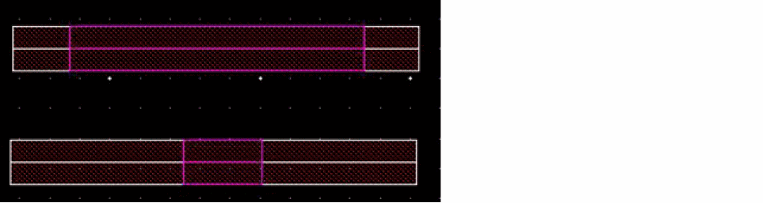

Splitting Multiple Objects
- On the layout canvas, select all paths and connected objects you want to stretch.
- Choose Edit – Advanced – Split.
-
Press
F3to open the form. - Set Snap Mode to anyAngle.
-
Click on the canvas to create a split line through the segments.
To stretch a segment of each path, create a split line that crosses each path twice, once at each end of the segment you want to stretch.
Create the split line at a 45-degree angle through the segments so that the edges of the segments are offset from each other. This prevents the path segments from overlapping when you stretch them. -
Double-click at the last point of the split line.
The reference area to be stretched is highlighted.
 - Click at the starting point for the stretch.
-
Click at the new location where you want to stretch the segments.
The following figure shows the resultant stretched objects:
The path segments are stretched. Also, the following other objects move:
- Any objects attached to the segments (such as vias) that have been selected.
- Any objects, such as instances, labels, mosaics, bends, and tapers, not recognized by the Split command but attached to the path, if they have been selected.
- Objects aligned to a multipart path you stretch stay in alignment, even if you did not select them.
Subrectangles and subpaths in multipart paths regenerate after the stretch.
Related Topics
Return to top